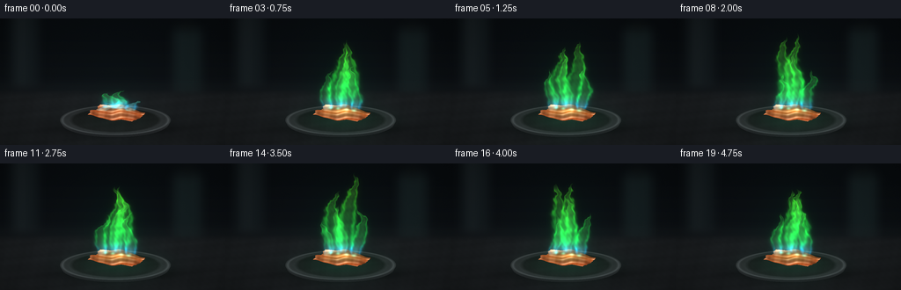
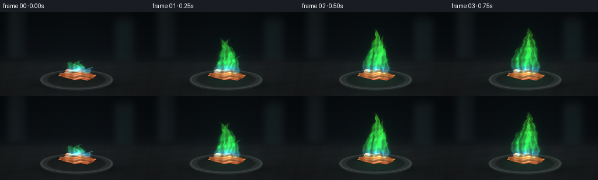

CODING AGENTS AS PIXEL WORLD MODELS
traex/GPT-6.1-Sol · phygen_126
点击播放 · 原生 RGB 像素
逐轮保存的候选
回放视频、检查图与代码变化。
每份候选均可单独播放。实际图片检查记录在下方工具轨迹中。
候选 01播放与检查图
点击播放 · 原生 RGB 像素


展开代码变化
--- 上一保存版本
+++ 本次保存版本
@@ -0,0 +1,176 @@
+from pathlib import Path
+import numpy as np
+from PIL import Image, ImageDraw, ImageFilter
+import artifact_io
+
+ROOT=Path(__file__).resolve().parent
+W,H,S=256,144,3
+ww,hh=W*S,H*S
+Y,X=np.mgrid[0:hh,0:ww].astype(np.float32)/S
+rng=np.random.default_rng(126)
+
+def noise(x,y,t=0):
+ return (np.sin(x*.31+y*.43+t)*np.sin(x*.17-y*.32-t*.77)+.45*np.sin(x*.87+y*.71+t*1.3)*np.cos(y*.57-x*.64+t*.2)+.22*np.cos(x*1.91-y*1.37+t)) / 1.67
+
+def blur(a,r):
+ return np.asarray(Image.fromarray(np.uint8(np.clip(a,0,255))).filter(ImageFilter.GaussianBlur(r*S))).astype(np.float32)
+
+def base_scene():
+ # Dark defocused laboratory, shallow depth of field.
+ bg=np.zeros((hh,ww,3),np.float32)
+ upper=np.clip((Y-12)/130,0,1)
+ bg[:]=np.stack([9+upper*9,13+upper*9,16+upper*10],axis=-1)
+ b=Image.fromarray(bg.astype(np.uint8)); d=ImageDraw.Draw(b)
+ d.rectangle((12*S,-20*S,43*S,77*S),fill=(20,27,30))
+ d.rectangle((21*S,-20*S,27*S,78*S),fill=(30,37,40))
+ d.rounded_rectangle((197*S,10*S,229*S,90*S),radius=8*S,fill=(21,31,33))
+ d.rectangle((205*S,5*S,220*S,15*S),fill=(15,20,21))
+ d.line((0,78*S,ww,78*S),fill=(35,40,42),width=2*S)
+ bg=np.asarray(b.filter(ImageFilter.GaussianBlur(5*S))).astype(np.float32)
+ table=1/(1+np.exp(-(Y-84)/2))
+ tex=noise(X*.38,Y*.66)+noise(X*1.8,Y*2.4)*.2
+ floor=np.stack([27+tex*2.3,30+tex*2.5,32+tex*2.7],axis=-1)
+ bg=bg*(1-table[...,None])+floor*table[...,None]
+ vign=np.clip(1-.26*((X-128)/150)**2-.22*((Y-78)/95)**2,.5,1)
+ bg*=vign[...,None]
+ # Cast contact shadow and dark ceramic laboratory crucible dish.
+ shadow=np.exp(-((X-134)/67)**2-((Y-125)/9)**2)*.53
+ bg*=1-shadow[...,None]
+ ellipse=np.sqrt(((X-131)/63)**2+((Y-115.5)/17)**2)
+ lower=np.sqrt(((X-131)/61)**2+((Y-119)/16)**2)
+ m=lower<1
+ side=np.stack([np.full_like(X,30),np.full_like(X,32),np.full_like(X,34)],-1)
+ side+=np.clip(1-(Y-119)/16,0,1)[...,None]*8
+ bg=np.where(m[...,None],side,bg)
+ m=ellipse<1
+ ring=np.exp(-((ellipse-.955)/.025)**2)
+ ceramic=(43+8*(Y-110)/25 +noise(X*.7,Y)*2.1+ring*24)
+ dish=np.stack([ceramic*.91,ceramic*.97,ceramic],-1)
+ inside=np.clip((.84-ellipse)*13,0,1)
+ dish-=inside[...,None]*np.array([16,17,18])
+ bg=np.where(m[...,None],dish,bg)
+ return bg
+
+base=base_scene()
+# A solid irregular, rippled copper specimen. Geometry is rasterized directly.
+N,M=44,24
+u=np.linspace(-1,1,N); v=np.linspace(-1,1,M)
+U,V=np.meshgrid(u,v)
+px=132+25.5*U+8.2*V+(1.1*np.sin(V*6)+.5*np.sin(V*17))*np.abs(U)**6
+py=111+4.2*U-6.8*V
+pz=2.4+1.6*np.sin(U*3.8+V*1.7)+.8*np.cos(V*5.6-U*2)+1.0*np.abs(V)**5+.45*np.sin(U*9+V*3)
+screen=np.stack([px,py-pz],axis=-1)
+pos=np.stack([px,py,pz],axis=-1)
+# 3D lighting normals from the foil height field.
+pu=np.gradient(pos,axis=1); pv=np.gradient(pos,axis=0)
+norm=np.cross(pu,pv); norm/=np.linalg.norm(norm,axis=-1,keepdims=True)
+norm=np.where(norm[...,2:3]<0,-norm,norm)
+light=np.array([-.35,-.5,.8]); light/=np.linalg.norm(light)
+view=np.array([0,.72,.69]); view/=np.linalg.norm(view)
+halfv=(light+view); halfv/=np.linalg.norm(halfv)
+diff=np.maximum(0,norm@light)
+spec=np.maximum(0,norm@halfv)**18
+color=np.array([173.,76.,36.])*(.4+.65*diff[...,None])+spec[...,None]*np.array([123.,125.,111.])
+color+=(.5+.5*np.sin(U*7+V*3))[...,None]*np.array([19.,10.,4.])
+tris=[]
+for j in range(M-1):
+ for i in range(N-1):
+ tris.extend([((j,i),(j,i+1),(j+1,i)),((j+1,i),(j,i+1),(j+1,i+1))])
+tris.sort(key=lambda ids: sum(py[idx] for idx in ids))
+
+def draw_copper(img,t,energy):
+ # The fractured dark edge gives the metal visible thickness.
+ ed=Image.new('RGBA',(ww,hh)); dr=ImageDraw.Draw(ed)
+ border=[tuple(screen[-1,i]*S+np.array([0,1.8*S])) for i in range(N)]
+ border+= [tuple(screen[-1,i]*S) for i in range(N-1,-1,-1)]
+ dr.polygon(border,fill=(69,31,16,255))
+ ea=np.asarray(ed).astype(np.float32); img=img*(1-ea[...,3:]/255)+ea[...,:3]*ea[...,3:]/255
+ for ids in tris:
+ p=np.array([screen[idx] for idx in ids])*S
+ xmin=max(0,int(p[:,0].min())); xmax=min(ww,int(p[:,0].max())+1)
+ ymin=max(0,int(p[:,1].min())); ymax=min(hh,int(p[:,1].max())+1)
+ if xmin>=xmax or ymin>=ymax: continue
+ yy,xx=np.mgrid[ymin:ymax,xmin:xmax]
+ den=(p[1,1]-p[2,1])*(p[0,0]-p[2,0])+(p[2,0]-p[1,0])*(p[0,1]-p[2,1])
+ a=((p[1,1]-p[2,1])*(xx-p[2,0])+(p[2,0]-p[1,0])*(yy-p[2,1]))/den
+ b=((p[2,1]-p[0,1])*(xx-p[2,0])+(p[0,0]-p[2,0])*(yy-p[2,1]))/den
+ c=1-a-b; mask=(a>=0)&(b>=0)&(c>=0)
+ cs=np.array([color[idx] for idx in ids])
+ rgb=a[...,None]*cs[0]+b[...,None]*cs[1]+c[...,None]*cs[2]
+ tx=xx/S; ty=yy/S
+ grain=noise(tx*2.7,ty*2.2)
+ rgb+=grain[...,None]*11
+ # Oxidation concentrated around the heated portion, copper stays visible.
+ scorch=np.exp(-((tx-133)/18)**2-((ty-106)/5)**2)*(.07+.21*t/4.75)
+ rgb*=1-scorch[...,None]
+ reflection=np.exp(-((tx-134)/25)**2-((ty-106)/6)**2)*energy
+ rgb+=reflection[...,None]*np.array([8,38,15])
+ hot=np.exp(-((tx-133)/11)**2-((ty-105)/2.1)**2)*energy
+ rgb+=hot[...,None]*np.array([96,30,1])
+ img[ymin:ymax,xmin:xmax]=np.where(mask[...,None],rgb,img[ymin:ymax,xmin:xmax])
+ return img
+
+
+def flame(t,energy):
+ density=np.zeros_like(X)
+ core=np.zeros_like(X)
+ # Separate overlapping turbulent flame sheets share an unbroken fuel base.
+ params=[(125,102,75,13,.2),(137,103,83,13,1.8),(148,105,52,9,3.3),(116,105,45,8,4.9),(132,103,64,9,5.5)]
+ for k,(x0,y0,h,w,phase) in enumerate(params):
+ h*=energy*(1+.08*np.sin(t*3.4+phase)+.045*np.sin(t*7.1+phase))
+ if h<.1: continue
+ z=(y0-Y)/h
+ zz=np.clip(z,0,1)
+ sway=(np.sin(zz*5.6-t*3.1+phase)-np.sin(-t*3.1+phase))*zz*6 + np.sin(zz*12-t*5+phase)*zz**2*3
+ center=x0+sway+3*zz
+ width=w*(.56+.68*np.sin(np.pi*zz))*(1-zz)**.72+.12
+ warp=noise(X*.64,Y*.59,t*3.9)*(.85+zz*2.4)
+ q=np.abs((X-center+warp)/width)
+ shell=np.exp(-((q-.72)/.24)**2)
+ inner=np.exp(-(q/.66)**2)
+ longitudinal=np.clip(np.minimum(z*15,(1-z)*11),0,1)
+ longitudinal*=((z>0)&(z<1))
+ turbulence=.72+.28*noise(X*.71,Y*.7-t*10,t*2)
+ sheet=(shell*.75+inner*.34)*longitudinal*turbulence
+ density+=sheet*(.6 if k in (3,4) else .78)
+ core+=inner*longitudinal*.26
+ return density,core
+
+frames=[]
+for f in range(20):
+ t=f/4
+ # Immediate ignition grows rapidly, followed by a sustained copper-green burn.
+ energy=[.23,.70,.96][f] if f<3 else 1.0
+ img=base.copy()
+ halo=np.exp(-((X-133)/38)**2-((Y-84)/55)**2)*energy
+ img+=halo[...,None]*np.array([0.,7.,4.])
+ bounce=np.exp(-((X-134)/46)**2-((Y-115)/13)**2)*energy*(.94+.06*np.sin(t*6))
+ img+=bounce[...,None]*np.array([1.,18.,10.])
+ img=draw_copper(img,t,energy)
+ density,core=flame(t,energy)
+ # Emissive spectral colour: blue/cyan foot, vivid emerald body, lime tips.
+ z=np.clip((103-Y)/70,0,1)
+ foot=np.exp(-((Y-101)/8.0)**2)
+ red=13+47*z**1.6+foot*4
+ green=220-10*z-foot*69
+ blue=80-58*z+foot*140
+ emission=np.stack([red,green,blue],-1)
+ emit=density[...,None]*emission
+ # A soft optical bloom surrounding sharp translucent flame detail.
+ bloom=blur(emit*.52,2.8)+blur(emit*.21,7)
+ img+=bloom*.50
+ alpha=1-np.exp(-density*.28)
+ img=img*(1-alpha[...,None])
+ img+=emit*.88
+ img+=core[...,None]*np.stack([40+foot*95,43+foot*145,30+foot*142],-1)
+ # Tiny luminous turquoise roots sit directly on the copper surface.
+ for cx in [120,128,138,146]:
+ root=np.exp(-((X-cx)/2.7)**2-((Y-(103+(cx-133)*.13))/1.6)**2)*energy
+ img+=root[...,None]*np.array([31,120,107])
+ img=np.clip(img,0,255)
+ # Subtle deterministic film grain, stable composition without camera motion.
+ grain=rng.normal(0,.45,(hh,ww,1))
+ im=Image.fromarray(np.uint8(np.clip(img+grain,0,255))).resize((W,H),Image.Resampling.LANCZOS)
+ frames.append(np.asarray(im))
+artifact_io.save(np.stack(frames).astype(np.uint8),ROOT)
+print('Saved 20 RGB frames and player artifacts.')
可观测工具轨迹
实际执行的命令与返回图片。
命令 1exit 0
/bin/bash -lc "ls -la && cat prompt.txt && printf '\\n--- RULES ---\\n' && cat GENERATION_RULES.md && printf '\\n--- SPEC ---\\n' && cat task_spec.json"
命令 2exit 0
/bin/bash -lc 'cat artifact_io.py'
命令 3exit 0
/bin/bash -lc "python - <<'PY'
import numpy, PIL
try: import scipy; print('scipy',scipy.__version__)
except: pass
PY"命令 4exit 0
/bin/bash -lc "cat > generate.py <<'PY'
from pathlib import Path
import numpy as np
from PIL import Image, ImageDraw, ImageFilter
import artifact_io
ROOT=Path(__file__).resolve().parent
W,H,S=256,144,3
ww,hh=W*S,H*S
Y,X=np.mgrid[0:hh,0:ww].astype(np.float32)/S
rng=np.random.default_rng(126)
def noise(x,y,t=0):
return (np.sin(x*.31+y*.43+t)*np.sin(x*.17-y*.32-t*.77)+.45*np.sin(x*.87+y*.71+t*1.3)*np.cos(y*.57-x*.64+t*.2)+.22*np.cos(x*1.91-y*1.37+t)) / 1.67
def blur(a,r):
return np.asarray(Image.fromarray(np.uint8(np.clip(a,0,255))).filter(ImageFilter.GaussianBlur(r*S))).astype(np.float32)
def base_scene():
# Dark defocused laboratory, shallow depth of field.
bg=np.zeros((hh,ww,3),np.float32)
upper=np.clip((Y-12)/130,0,1)
bg[:]=np.stack([9+upper*9,13+upper*9,16+upper*10],axis=-1)
b=Image.fromarray(bg.astype(np.uint8)); d=ImageDraw.Draw(b)
d.rectangle((12*S,-20*S,43*S,77*S),fill=(20,27,30))
d.rectangle((21*S,-20*S,27*S,78*S),fill=(30,37,40))
d.rounded_rectangle((197*S,10*S,229*S,90*S),radius=8*S,fill=(21,31,33))
d.rectangle((205*S,5*S,220*S,15*S),fill=(15,20,21))
d.line((0,78*S,ww,78*S),fill=(35,40,42),width=2*S)
bg=np.asarray(b.filter(ImageFilter.GaussianBlur(5*S))).astype(np.float32)
table=1/(1+np.exp(-(Y-84)/2))
tex=noise(X*.38,Y*.66)+noise(X*1.8,Y*2.4)*.2
floor=np.stack([27+tex*2.3,30+tex*2.5,32+tex*2.7],axis=-1)
bg=bg*(1-table[...,None])+floor*table[...,None]
vign=np.clip(1-.26*((X-128)/150)**2-.22*((Y-78)/95)**2,.5,1)
bg*=vign[...,None]
# Cast contact shadow and dark ceramic laboratory crucible dish.
shadow=np.exp(-((X-134)/67)**2-((Y-125)/9)**2)*.53
bg*=1-shadow[...,None]
ellipse=np.sqrt(((X-131)/63)**2+((Y-115.5)/17)**2)
lower=np.sqrt(((X-131)/61)**2+((Y-119)/16)**2)
m=lower<1
side=np.stack([np.full_like(X,30),np.full_like(X,32),np.full_like(X,34)],-1)
side+=np.clip(1-(Y-119)/16,0,1)[...,None]*8
bg=np.where(m[...,None],side,bg)
m=ellipse<1
ring=np.exp(-((ellipse-.955)/.025)**2)
ceramic=(43+8*(Y-110)/25 +noise(X*.7,Y)*2.1+ring*24)
dish=np.stack([ceramic*.91,ceramic*.97,ceramic],-1)
inside=np.clip((.84-ellipse)*13,0,1)
dish-=inside[...,None]*np.array([16,17,18])
bg=np.where(m[...,None],dish,bg)
return bg
base=base_scene()
# A solid irregular, rippled copper specimen. Geometry is rasterized directly.
N,M=44,24
u=np.linspace(-1,1,N); v=np.linspace(-1,1,M)
U,V=np.meshgrid(u,v)
px=132+25.5*U+8.2*V+(1.1*np.sin(V*6)+.5*np.sin(V*17))*np.abs(U)**6
py=111+4.2*U-6.8*V
pz=2.4+1.6*np.sin(U*3.8+V*1.7)+.8*np.cos(V*5.6-U*2)+1.0*np.abs(V)**5+.45*np.sin(U*9+V*3)
screen=np.stack([px,py-pz],axis=-1)
pos=np.stack([px,py,pz],axis=-1)
# 3D lighting normals from the foil height field.
pu=np.gradient(pos,axis=1); pv=np.gradient(pos,axis=0)
norm=np.cross(pu,pv); norm/=np.linalg.norm(norm,axis=-1,keepdims=True)
norm=np.where(norm[...,2:3]<0,-norm,norm)
light=np.array([-.35,-.5,.8]); light/=np.linalg.norm(light)
view=np.array([0,.72,.69]); view/=np.linalg.norm(view)
halfv=(light+view); halfv/=np.linalg.norm(halfv)
diff=np.maximum(0,norm@light)
spec=np.maximum(0,norm@halfv)**18
color=np.array([173.,76.,36.])*(.4+.65*diff[...,None])+spec[...,None]*np.array([123.,125.,111.])
color+=(.5+.5*np.sin(U*7+V*3))[...,None]*np.array([19.,10.,4.])
tris=[]
for j in range(M-1):
for i in range(N-1):
tris.extend([((j,i),(j,i+1),(j+1,i)),((j+1,i),(j,i+1),(j+1,i+1))])
tris.sort(key=lambda ids: sum(py[idx] for idx in ids))
def draw_copper(img,t,energy):
# The fractured dark edge gives the metal visible thickness.
ed=Image.new('RGBA',(ww,hh)); dr=ImageDraw.Draw(ed)
border=[tuple(screen[-1,i]*S+np.array([0,1.8*S])) for i in range(N)]
border+= [tuple(screen[-1,i]*S) for i in range(N-1,-1,-1)]
dr.polygon(border,fill=(69,31,16,255))
ea=np.asarray(ed).astype(np.float32); img=img*(1-ea[...,3:]/255)+ea[...,:3]*ea[...,3:]/255
for ids in tris:
p=np.array([screen[idx] for idx in ids])*S
xmin=max(0,int(p[:,0].min())); xmax=min(ww,int(p[:,0].max())+1)
ymin=max(0,int(p[:,1].min())); ymax=min(hh,int(p[:,1].max())+1)
if xmin>=xmax or ymin>=ymax: continue
yy,xx=np.mgrid[ymin:ymax,xmin:xmax]
den=(p[1,1]-p[2,1])*(p[0,0]-p[2,0])+(p[2,0]-p[1,0])*(p[0,1]-p[2,1])
a=((p[1,1]-p[2,1])*(xx-p[2,0])+(p[2,0]-p[1,0])*(yy-p[2,1]))/den
b=((p[2,1]-p[0,1])*(xx-p[2,0])+(p[0,0]-p[2,0])*(yy-p[2,1]))/den
c=1-a-b; mask=(a>=0)&(b>=0)&(c>=0)
cs=np.array([color[idx] for idx in ids])
rgb=a[...,None]*cs[0]+b[...,None]*cs[1]+c[...,None]*cs[2]
tx=xx/S; ty=yy/S
grain=noise(tx*2.7,ty*2.2)
rgb+=grain[...,None]*11
# Oxidation concentrated around the heated portion, copper stays visible.
scorch=np.exp(-((tx-133)/18)**2-((ty-106)/5)**2)*(.07+.21*t/4.75)
rgb*=1-scorch[...,None]
reflection=np.exp(-((tx-134)/25)**2-((ty-106)/6)**2)*energy
rgb+=reflection[...,None]*np.array([8,38,15])
hot=np.exp(-((tx-133)/11)**2-((ty-105)/2.1)**2)*energy
rgb+=hot[...,None]*np.array([96,30,1])
img[ymin:ymax,xmin:xmax]=np.where(mask[...,None],rgb,img[ymin:ymax,xmin:xmax])
return img
def flame(t,energy):
density=np.zeros_like(X)
core=np.zeros_like(X)
# Separate overlapping turbulent flame sheets share an unbroken fuel base.
params=[(125,102,75,13,.2),(137,103,83,13,1.8),(148,105,52,9,3.3),(116,105,45,8,4.9),(132,103,64,9,5.5)]
for k,(x0,y0,h,w,phase) in enumerate(params):
h*=energy*(1+.08*np.sin(t*3.4+phase)+.045*np.sin(t*7.1+phase))
if h<.1: continue
z=(y0-Y)/h
zz=np.clip(z,0,1)
sway=(np.sin(zz*5.6-t*3.1+phase)-np.sin(-t*3.1+phase))*zz*6 + np.sin(zz*12-t*5+phase)*zz**2*3
center=x0+sway+3*zz
width=w*(.56+.68*np.sin(np.pi*zz))*(1-zz)**.72+.12
warp=noise(X*.64,Y*.59,t*3.9)*(.85+zz*2.4)
q=np.abs((X-center+warp)/width)
shell=np.exp(-((q-.72)/.24)**2)
inner=np.exp(-(q/.66)**2)
longitudinal=np.clip(np.minimum(z*15,(1-z)*11),0,1)
longitudinal*=((z>0)&(z<1))
turbulence=.72+.28*noise(X*.71,Y*.7-t*10,t*2)
sheet=(shell*.75+inner*.34)*longitudinal*turbulence
density+=sheet*(.6 if k in (3,4) else .78)
core+=inner*longitudinal*.26
return density,core
frames=[]
for f in range(20):
t=f/4
# Immediate ignition grows rapidly, followed by a sustained copper-green burn.
energy=[.23,.70,.96][f] if f<3 else 1.0
img=base.copy()
halo=np.exp(-((X-133)/38)**2-((Y-84)/55)**2)*energy
img+=halo[...,None]*np.array([0.,7.,4.])
bounce=np.exp(-((X-134)/46)**2-((Y-115)/13)**2)*energy*(.94+.06*np.sin(t*6))
img+=bounce[...,None]*np.array([1.,18.,10.])
img=draw_copper(img,t,energy)
density,core=flame(t,energy)
# Emissive spectral colour: blue/cyan foot, vivid emerald body, lime tips.
z=np.clip((103-Y)/70,0,1)
foot=np.exp(-((Y-101)/8.0)**2)
red=13+47*z**1.6+foot*4
green=220-10*z-foot*69
blue=80-58*z+foot*140
emission=np.stack([red,green,blue],-1)
emit=density[...,None]*emission
# A soft optical bloom surrounding sharp translucent flame detail.
bloom=blur(emit*.52,2.8)+blur(emit*.21,7)
img+=bloom*.50
alpha=1-np.exp(-density*.28)
img=img*(1-alpha[...,None])
img+=emit*.88
img+=core[...,None]*np.stack([40+foot*95,43+foot*145,30+foot*142],-1)
# Tiny luminous turquoise roots sit directly on the copper surface.
for cx in [120,128,138,146]:
root=np.exp(-((X-cx)/2.7)**2-((Y-(103+(cx-133)*.13))/1.6)**2)*energy
img+=root[...,None]*np.array([31,120,107])
img=np.clip(img,0,255)
# Subtle deterministic film grain, stable composition without camera motion.
grain=rng.normal(0,.45,(hh,ww,1))
im=Image.fromarray(np.uint8(np.clip(img+grain,0,255))).resize((W,H),Image.Resampling.LANCZOS)
frames.append(np.asarray(im))
artifact_io.save(np.stack(frames).astype(np.uint8),ROOT)
print('Saved 20 RGB frames and player artifacts.')
PY
python generate.py"命令 5exit 0
/bin/bash -lc "python - <<'PY'
from pathlib import Path
import numpy as np
p=Path('.')
a=np.load(p/'pixels.npz')['pixels']
assert a.shape==(144,256,20)
assert len(list((p/'frames').glob('*.png')))==20
assert (p/'index.html').is_file()
print('Verified:',a.shape,'20 frames, 256Ã144, 4 fps; all required artifacts exist.')
PY"视觉工具实际返回图片 1

保存候选 1 份；完成命令 5 次；可验证图片返回 1 张。原始 API 响应与完整日志保留在本地。